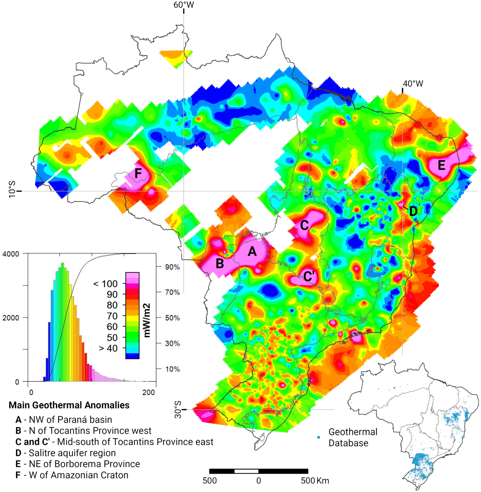

Updated mapping of terrestrial heat flow in Brazil

Resumo em Português
Um banco de dados geotérmico atualizado é apresentado por meio de um novo mapeamento do fluxo de calor terrestre em todo o território brasileiro. Novas estimativas desse parâmetro geotérmico foram obtidas utilizando um método indireto baseado no conteúdo de sílica em águas subterrâneas (geotermometria de sílica), medido em 4.949 poços. O Banco de Dados Geotérmico Brasileiro do Laboratório de Geotermia do Observatório Nacional compreende atualmente dados geotérmicos obtidos diretamente de perfis de temperatura-profundidade, principalmente em poços de hidrocarbonetos, e de outros registros em poços de água subterrânea utilizando estimativas indiretas de temperatura. O procedimento de estimativa indireta de temperatura utilizado assume que a quantidade de sílica dissolvida nas águas subterrâneas depende das temperaturas in situ das rochas hospedeiras ou reservatórios geotérmicos. A partir desse cálculo inicial, o fluxo de calor, a profundidade do aquífero e a temperatura no fundo do reservatório foram calculados utilizando uma relação numérica especificamente modificada e adaptada ao contexto geológico brasileiro. As medições do conteúdo de sílica em poços de água subterrânea foram obtidas do Sistema de Informações de Águas Subterrâneas do Serviço Geológico do Brasil. Quando disponíveis no banco de dados, os perfis litológicos desses poços foram adicionalmente utilizados para calcular a condutividade térmica média ponderada. Os resultados indicam que regiões com sistemas de aquíferos fraturados, com conteúdo médio de sílica de 40 ppm, apresentam os maiores valores de fluxo de calor, da ordem de 70 mW/m² em média. Regiões com aquíferos cársticos, com conteúdo médio de sílica de 29 ppm, exibem a maioria dos menores valores de fluxo de calor. Regiões com aquíferos porosos de conteúdo médio de sílica entre 30 e 33 ppm apresentam valores intermediários de fluxo de calor entre 50 e 60 mW/m². O refinamento do mapeamento do fluxo de calor terrestre no Brasil indica diversas anomalias térmicas em escala regional com potencial para prospecção de recursos geotérmicos de baixa a alta temperatura, localizadas essencialmente na região NW da Bacia do Paraná, norte da Província Tocantins (porção ocidental), porção centro-sul da Província Tocantins (porção oriental), parte centro-norte do Cráton São Francisco e região NE da Província Borborema.